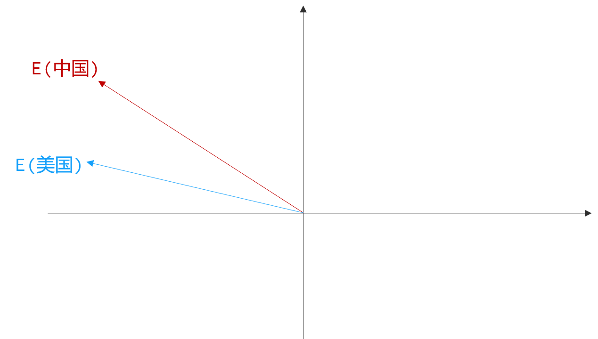
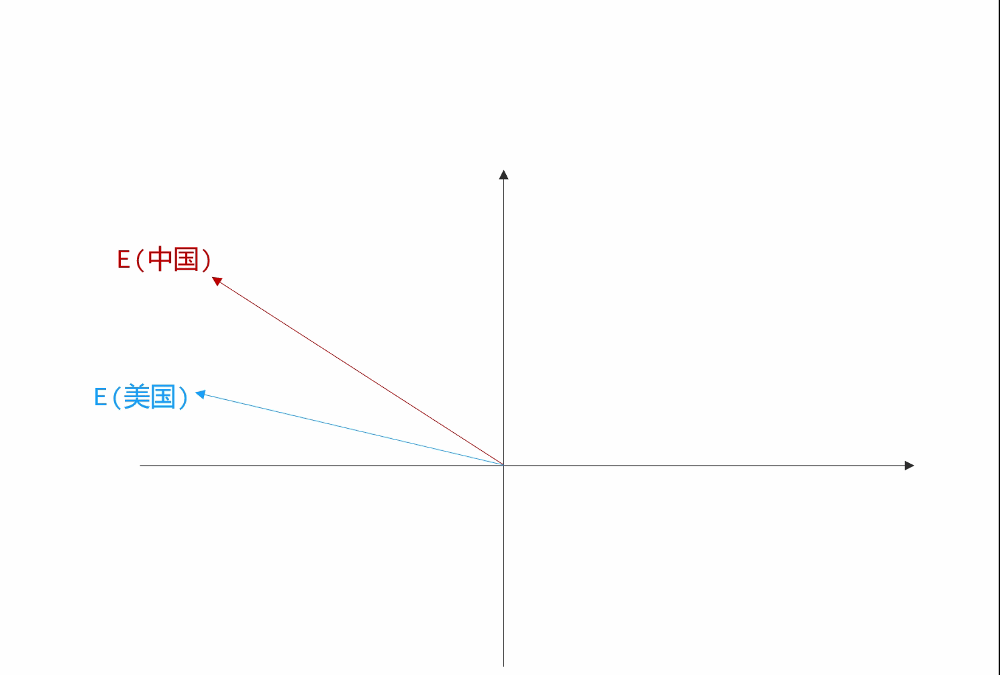
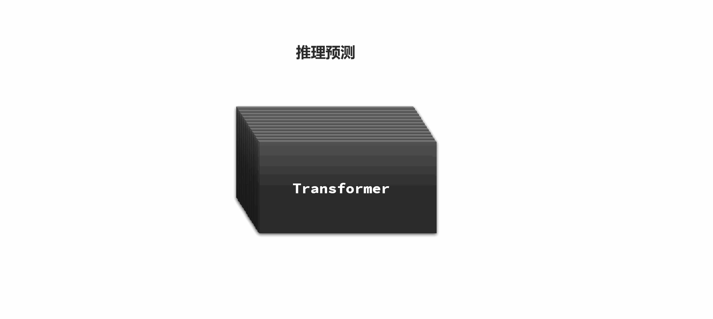

大语言模型
在2003年，图灵奖得主约书亚·本吉奥（Yoshua Bengio）的一篇名为《A neural probabilistic language model》的论文开创了神经网络语言模型（Neural Network Language Model，NNLM）的先河。
这篇文章中首次提到了词向量（Word Embedding）的概念雏形，这为神经网络训练学习自然语言打下了坚实的基础。
-
每个词语都可以经过模型运算转化为一个多维向量（也就是一个浮点数数组，GPT3采用12288维向量）
-
通过训练使模型计算出的多维向量与文字语义产生关联，使多维空间中的不同方向表示不同语义
例如，在经过训练后的向量空间中，有两个向量：中国、美国：

此时，我们用E(美国) - E(中国) 得到的新向量，就可以表示为美国与中国的差异。
假如此时我询问LLM在中国有什么食物与美国的汉堡类似，我们就可以这么做：

-
先找到表示汉堡的向量：E(汉堡)
-
然后加上表示两个国家差异的向量:E(美国) - E(中国)
-
从而计算出一个新向量：E(汉堡) + E(美国) - E(中国)
-
最后，将得到的向量反向量化（unembedding），大概率就是我们要的结果
当然，真实情况会比这个复杂的多，受到语句上下文的影响，和多义词的影响，运算可能得到不止一个结果，并且会根据可能性形成每一个结果的概率分布，然后通过某种函数算法选择一个最终结果。
综上，大语言模型，就是把人类语言转为可以计算的多维向量坐标，然后根据上文向量计算，来推测下文。就像这样：

更神奇的是，人类一开始训练语言模型只是为了让它理解人类语言，起到翻译作用。但当模型和数据规模足够大时，它不仅能够理解和生成自然语言，还能理解、推理、分析人类生活中的大部分问题，成为了可应用于各个领域的通用人工智能（AGI）！
这种因为数据和模型规模扩大而涌现出各种能力的现象，我们称之为泛化。
而这样的大规模语言模型我们就称为大语言模型（Large Language Model），简称LLM.
如果大家想要进一步搞清楚大模型原理，可以参考以下两个视频：
https://www.bilibili.com/video/BV1atCRYsE7x
https://www.youtube.com/watch?v=wjZofJX0v4M&t=1169s
大模型应用
什么是大模型应用呢？它与大模型有什么关系呢？